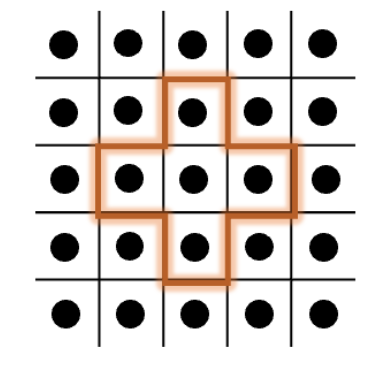
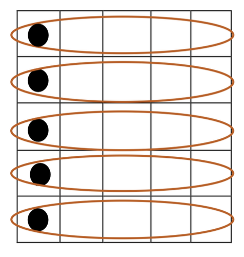
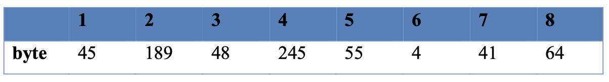
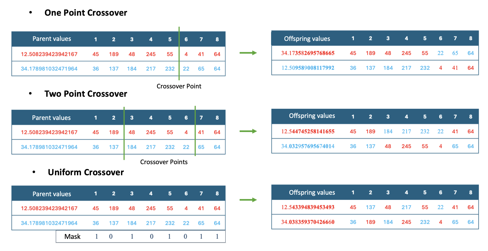
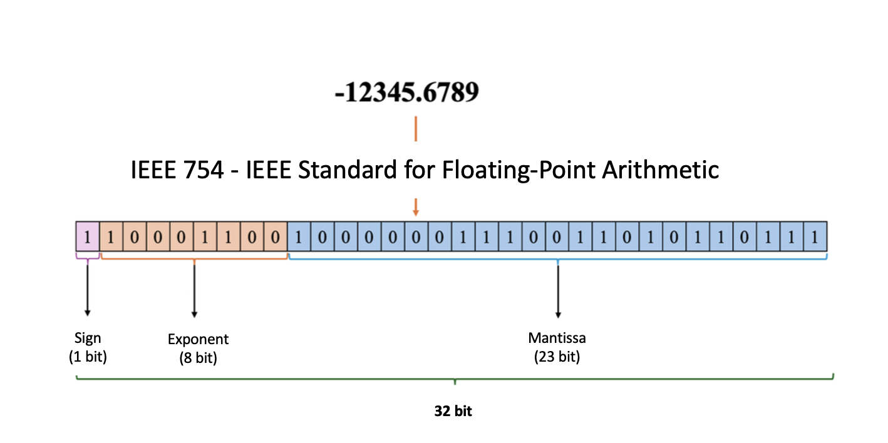

Components of pycellga
pycellga is a comprehensive Python library designed for implementing and experimenting with cellular genetic algorithms (CGAs). CGAs are evolutionary algorithms characterized by structured populations and localized interactions, making them suitable for a wide range of optimization problems. This guide provides a detailed breakdown of each module within pycellga, highlighting their purpose, key features, and practical use cases.
Core Modules API Refences
Population Management
Handles the initialization and management of the population in CGA. It includes methods for population updates, replacement, and neighborhood interactions within the grid structure.
- class OptimizationMethod(value, names=<not given>, *values, module=None, qualname=None, type=None, start=1, boundary=None)[source]
Bases:
EnumOptimizationMethod is an enumeration class that represents the optimization methods used in an evolutionary algorithm. The five optimization methods are CGA, SYNCGA, ALPHA_CGA, CCGA, and MCCCGA. “cga”, “sync_cga”, “alpha_cga”, “ccga”, “mcccga”
- ALPHA_CGA = 3
- CCGA = 4
- CGA = 1
- MCCCGA = 5
- SYNCGA = 2
- class Population(method_name: OptimizationMethod = OptimizationMethod.CGA, ch_size: int = 0, n_rows: int = 0, n_cols: int = 0, gen_type: str = '', problem: AbstractProblem = None, vector: list = [], mins: list[float] = [], maxs: list[float] = [])[source]
Bases:
objectA class to represent a population in an evolutionary algorithm.
- method_name
The name of the optimization method. Must be one of OptimizationMethod.CGA, OptimizationMethod.SYNCGA, OptimizationMethod.ALPHA_CGA, OptimizationMethod.CCGA, or OptimizationMethod.MCCCGA.
- Type:
- ch_size
The size of the chromosome.
- Type:
int
- n_rows
The number of rows in the grid.
- Type:
int
- n_cols
The number of columns in the grid.
- Type:
int
- gen_type
The type of genome representation (GeneType.BINARY, Genetype.PERMUTATION, GeneType.REAL).
- Type:
str
- problem
The problem instance used to evaluate fitness.
- Type:
- vector
A list used to generate candidates for the population (relevant for MCCCGA).
- Type:
list
- __init__(method_name: OptimizationMethod = OptimizationMethod.CGA, ch_size: int = 0, n_rows: int = 0, n_cols: int = 0, gen_type: str = '', problem: AbstractProblem = None, vector: list = [], mins: list[float] = [], maxs: list[float] = [])[source]
Initialize the Population with the specified parameters.
- Parameters:
method_name (OptimizationMethod.) – The name of the optimization method. Must be one of OptimizationMethod.CGA, OptimizationMethod.SYNCGA, OptimizationMethod.ALPHA_CGA, OptimizationMethod.CCGA, or OptimizationMethod.MCCCGA. Default is OptimizationMethod.CGA.
ch_size (int, optional) – The size of the chromosome (default is 0).
n_rows (int, optional) – The number of rows in the grid (default is 0).
n_cols (int, optional) – The number of columns in the grid (default is 0).
gen_type (str, optional) – The type of genome representation (default is an empty string).
problem (AbstractProblem, optional) – The problem instance used to evaluate fitness (default is None).
vector (list, optional) – A list used to generate candidates (default is an empty list).
mins (list[float]) – The minimum values for each gene in the chromosome (for real value optimization).
maxs (list[float]) – The maximum values for each gene in the chromosome (for real value optimization).
- initial_population() List[Individual][source]
Generate the initial population of individuals.
- Returns:
A list of initialized Individual objects with their respective chromosomes, fitness values, positions, and neighbors.
- Return type:
List[Individual]
Individual Representation
Represents an individual in the population, encapsulating attributes like the chromosome and fitness value. This module provides the fundamental building blocks for individuals used within the CGA framework.
- class Individual(gen_type: GeneType = GeneType.BINARY, ch_size: int = 0, mins: list[float] = [], maxs: list[float] = [])[source]
Bases:
objectA class to represent an individual in an evolutionary algorithm.
- chromosome
The chromosome representing the individual.
- Type:
list
- fitness_value
The fitness value of the individual.
- Type:
float
- position
The position of the individual, represented as a tuple (x, y).
- Type:
tuple
- neighbors_positions
The positions of the individual’s neighbors.
- Type:
list or None
- neighbors
The list of neighbors for the individual.
- Type:
list or None
- gen_type
The enum type of genome representation (GeneType.BINARY, GeneType.PERMUTATION, GeneType.REAL).
- Type:
GeneType
- ch_size
The size of the chromosome.
- Type:
int
- __init__(gen_type: GeneType = GeneType.BINARY, ch_size: int = 0, mins: list[float] = [], maxs: list[float] = [])[source]
Initialize an Individual with a specific genome type and chromosome size.
- Parameters:
gen_type (str, optional) – The type of genome representation. Must be one of GeneType.BINARY, GeneType.PERMUTATION, or GeneType.REAL. (default is GeneType.BINARY)
ch_size (int) – The size of the chromosome.
mins (list[float]) – The minimum values for each gene in the chromosome.
maxs (list[float]) – The maximum values for each gene in the chromosome.
Description
------------
algorithm. (The Individual class represents an individual in an evolutionary)
BINARY (If the genome type is)
1s. (the chromosome is a list of 0s and)
PERMUTATION (If the genome type is)
permutation. (the chromosome is a list of integers representing a)
cases (In both the binary and permutation)
chromosome. (the mins and maxs lists are used to define the range of each gene in the)
REAL (If the genome type is)
numbers. (the chromosome is a list of real)
case (In this)
chromosome.
- generate_candidate(probvector: list) list[source]
Generate a candidate chromosome based on the given probability vector.
- Parameters:
vector (list of float) – The probability vector used to generate the candidate chromosome.
- Returns:
The generated candidate chromosome as a list of 0s and 1s.
- Return type:
list
- getneighbors() list[source]
Get the list of neighbors for the individual.
- Returns:
The list of neighbors for the individual.
- Return type:
list or None
- getneighbors_positions() list[source]
Get the positions of the individual’s neighbors.
- Returns:
The positions of the individual’s neighbors.
- Return type:
list or None
- randomize()[source]
Randomly initialize the chromosome based on the genome type.
- Returns:
The randomly generated chromosome.
- Return type:
list
- Raises:
NotImplementedError – If the genome type is not implemented.
Grid Structure
Defines the grid structure for the cellular genetic algorithm. The grid layout restricts interactions to neighboring individuals, which helps maintain population diversity and allows for more controlled exploration.
- class Grid(n_rows: int, n_cols: int)[source]
Bases:
objectA class to represent a 2D grid.
- n_rows
Number of rows in the grid.
- Type:
int
- n_cols
Number of columns in the grid.
- Type:
int
Byte Operators
Implements low-level byte-based operations that support machine-coded genetic algorithms. These operators are used for efficient encoding and decoding of chromosome data, enhancing the speed and memory usage for real-valued optimizations.
- bits_to_float(bit_list: list[int]) float[source]
Convert a bit representation to its float value.
- Parameters:
bit_list (list of int) – A list of 32 integers (0 or 1) representing the bit pattern of the float.
- Returns:
The float value represented by the bit pattern.
- Return type:
float
- bits_to_floats(bit_list: list[int]) list[float][source]
Convert a combined bit representation back to a list of floats.
- Parameters:
bit_list (list of int) – A list of integers (0 or 1) representing the combined bit patterns of the floats.
- Returns:
The list of float values represented by the bit pattern.
- Return type:
list of float
- float_to_bits(float_number: float) list[int][source]
Convert a float to its bit representation.
- Parameters:
float_number (float) – The float number to be converted.
- Returns:
A list of 32 integers (0 or 1) representing the bit pattern of the float.
- Return type:
list of int
- floats_to_bits(float_list: list[float]) list[int][source]
Convert a list of floats to their combined bit representation.
- Parameters:
float_list (list of float) – The list of float numbers to be converted.
- Returns:
A list of integers (0 or 1) representing the combined bit patterns of the floats.
- Return type:
list of int
Optimizer
The pycellga.optimizer module is the core component of the library, responsible for managing the execution of cellular genetic algorithms (CGAs). It integrates key evolutionary processes such as selection, mutation, recombination, and evaluation. The optimizer module also provides flexibility to implement and experiment with different CGA variants, each suited to specific optimization challenges.
Cellular Genetic Algorithm (cga)
The standard Cellular Genetic Algorithm (cga) operates with a fixed neighborhood structure and asynchronous updates. This approach provides robust performance for a wide range of problems, leveraging local interactions to explore the search space efficiently.
{kind=link}
Figure 1: Illustration of the standard CGA process.
Synchronous Cellular Genetic Algorithm (sync_cga)
Synchronous CGA (sync_cga) updates the entire population simultaneously in each generation. This ensures consistent progress across the population but may lead to premature convergence in some cases.
Alpha Male Cellular Genetic Algorithm (alpha_cga)
This strategy developed to enhance the performance of Cellular Genetic Algorithms is the Alpha-Male Cellular Genetic Algorithm (alpha_cga). Alpha-Male Genetic Algorithm divides individuals in a population into social groups. A social group consists of females that select the same alpha male. In each social group, one individual is labeled as the alpha male, while the rest are productive females.
In their research, scientists integrated the alpha-male structure into the genetic algorithm and conducted simulation studies on some test functions. As a result, the new algorithm was observed to produce better outcomes compared to classical genetic algorithms. Similarly, this algorithm was developed by integrating a structure that allows a certain number of alpha male individuals in the population to pair with a defined number of female individuals into the Cellular Genetic Algorithm structure.
However, due to its inherent structure, Cellular GA is already limited to pairing with neighbors. Although directly combining the cellular structure with the alpha-male algorithm is not possible, a new structure incorporating both approaches is illustrated in the following figure:
{kind=link}
Figure 2: Integration of alpha-male structure into Cellular Genetic Algorithm.
Improved CGA with Machine-Coded Operators
Enhanced performance in real-valued optimization problems is achieved through the use of machine-coded byte operators. This approach focuses on leveraging the representation of numerical data in memory to improve the efficiency and accuracy of genetic algorithms.
Understanding Machine-Coded (Byte) Genetic Operators
In computer programs, numerical data is typically stored in memory as byte sequences. A byte consists of eight bits, each capable of holding a value of zero or one. For small numbers, a few bytes suffice, but larger numbers or those requiring higher precision need more bytes. This problem is mitigated by the use of data types in compilers and interpreters.
The storage of a numerical value in memory involves a finite number of bytes, implying that representing real values with absolute precision is impossible. As the number of bytes increases, so does precision, allowing for a more accurate representation of real values. The byte sequence shown in Table 1 was generated using a formulation algorithm specified in the IEEE 754 Standard for Floating-Point Arithmetic. Compilers commonly implement this standard when converting real numbers to and from byte sequences.
For instance, consider a variable f with a numerical value accurate to 15 decimal places:
f = 12.508239423942167
When the variable f is converted to bytes, an 8-element byte array is obtained, each of which ranges from 0 to 255. This byte array is shown in Table 1.
{kind=link}
Table 1: Byte representation of variable f.
As shown in Figure 3, traditional crossover operators can be directly applied to the byte representation of real values.
{kind=link}
Figure 3: Application of traditional traversal operators to byte arrays
Machine-Coded Compact Cellular Genetic Algorithm (mcccga)
The Machine-Coded Compact Cellular Genetic Algorithm (mcccga) is a specialized approach to solving real-valued optimization problems by combining the principles of compact genetic algorithms and cellular structures. This method is particularly effective for memory-efficient optimization in large solution spaces.
Overview of Compact Genetic Algorithm
Compact Genetic Algorithms are evolutionary algorithms designed to efficiently handle binary-encoded representations of solutions. Instead of maintaining a population of solutions, cGA uses a probability vector to represent the population’s characteristics. Each element of the vector corresponds to the probability of a particular bit being 1 at a specific position in the solution space.
Key features of Compact GA:
Compact Representation: Uses a probability vector instead of a full population.
Efficient Updates: Updates the vector through a compact rule based on fitness comparisons.
Memory Efficiency: Requires significantly less memory than classical genetic algorithms.
Transition to Machine-Coded Compact GA
Building on the compact GA framework, Machine-Coded Compact GA extends the algorithm to real-valued optimization problems by leveraging the IEEE 754 standard for floating-point arithmetic. Real-valued variables are encoded into binary form and processed using the cGA principles. When needed, the binary representation is decoded back to real values using the same standard.
Integration with Cellular Structures
The Machine-Coded Compact Cellular GA adapts the compact GA principles to a cellular structure, where each individual interacts with its neighbors. This adaptation enables local exploration and facilitates parallelism in optimization.
Key enhancements:
Real-Valued Adaptation: Compact GA is extended to handle real-valued problems through encoding and decoding of variables.
Cellular Structure: Implements a grid-based interaction model, enhancing local exploration and reducing premature convergence.
Dynamic Probability Updates: Starts with a narrowed probability vector based on the variable’s range, improving convergence speed.
In Figure 4, a sample coding of the number -12345.6789 with 1 bit for the sign part, 8 bits for the exponent part and 23 bits for the decimal part, totaling 32 bits, is realized according to the IEEE-754 standard.
{kind=link}
Figure 4: Encoding the number according to the IEEE-754 standard.
API References
The following section provides the API reference for the pycellga.optimizer module.
- class Result(chromosome: List[float], fitness_value: float, generation_found: int)[source]
Bases:
object- __init__(chromosome: List[float], fitness_value: float, generation_found: int) None
- chromosome: List[float]
- fitness_value: float
- generation_found: int
- alpha_cga(n_cols: int, n_rows: int, n_gen: int, ch_size: int, p_crossover: float, p_mutation: float, problem: AbstractProblem, selection: SelectionOperator, recombination: RecombinationOperator, mutation: MutationOperator, seed_par: int = None) Result[source]
Optimize a problem using an evolutionary algorithm with an alpha-male exchange mechanism.
- Parameters:
n_cols (int) – Number of columns in the grid for the population.
n_rows (int) – Number of rows in the grid for the population.
n_gen (int) – Number of generations to run the optimization.
ch_size (int) – Size of the chromosome.
gen_type (GeneType) – Type of genome representation (GeneType.BINARY, GeneType.PERMUTATION, or GeneType.REAL).
p_crossover (float) – Probability of crossover, should be between 0 and 1.
p_mutation (float) – Probability of mutation, should be between 0 and 1.
problem (AbstractProblem) – The problem instance used to evaluate fitness.
selection (SelectionOperator) – Function used for selection in the evolutionary algorithm.
recombination (RecombinationOperator) – Function used for recombination (crossover) in the evolutionary algorithm.
mutation (MutationOperator) – Function used for mutation in the evolutionary algorithm.
mins (List[float]) – List of minimum values for each gene in the chromosome (for real value optimization).
maxs (List[float]) – List of maximum values for each gene in the chromosome (for real value optimization).
seed_par (int) – Ensures the random number generation is repeatable.
- Returns:
A Result object containing the best solution found, with its chromosome, fitness value, and generation.
- Return type:
- ccga(n_cols: int, n_rows: int, n_gen: int, ch_size: int, problem: AbstractProblem, selection: SelectionOperator) Result[source]
Perform optimization using a Cooperative Coevolutionary Genetic Algorithm (CCGA).
- Parameters:
n_cols (int) – Number of columns in the grid for the population.
n_rows (int) – Number of rows in the grid for the population.
n_gen (int) – Number of generations to run the optimization.
ch_size (int) – Size of the chromosome.
gen_type (GeneType) – Type of genome representation (GeneType.BINARY, Genetype.PERMUTATION, GeneType.REAL).
problem (AbstractProblem) – The problem instance used to evaluate fitness.
selection (SelectionOperator) – Function used for selection in the evolutionary algorithm.
mins (List[float]) – List of minimum values for each gene in the chromosome (for real value optimization).
maxs (List[float]) – List of maximum values for each gene in the chromosome (for real value optimization).
- Returns:
A Result object containing the best solution found during the optimization process, including its chromosome, fitness value, and generation.
- Return type:
- cga(n_cols: int, n_rows: int, n_gen: int, ch_size: int, p_crossover: float, p_mutation: float, problem: AbstractProblem, selection: SelectionOperator, recombination: RecombinationOperator, mutation: MutationOperator, seed_par: int = None) Result[source]
Optimize the given problem using a genetic algorithm.
- Parameters:
n_cols (int) – Number of columns in the population grid.
n_rows (int) – Number of rows in the population grid.
n_gen (int) – Number of generations to evolve.
ch_size (int) – Size of the chromosome.
gen_type (str) – Type of the genome representation (e.g., ‘Binary’, ‘Permutation’, ‘Real’).
p_crossover (float) – Probability of crossover (between 0 and 1).
p_mutation (float) – Probability of mutation (between 0 and 1).
problem (AbstractProblem) – The problem instance used for fitness evaluation.
selection (SelectionOperator) – Function or class used for selecting parents.
recombination (RecombinationOperator) – Function or class used for recombination (crossover).
mutation (MutationOperator) – Function or class used for mutation.
mins (list[float]) – List of minimum values for each gene in the chromosome (for real value optimization).
maxs (list[float]) – List of maximum values for each gene in the chromosome (for real value optimization).
seed_par (int) – Ensures the random number generation is repeatable.
- Returns:
A Result object containing the best solution found, with its chromosome, fitness value, and generation.
- Return type:
- compete(p1: Individual, p2: Individual) Tuple[Individual, Individual][source]
Compete between two individuals to determine the better one.
- Parameters:
p1 (Individual) – First individual.
p2 (Individual) – Second individual.
- Returns:
The better individual and the loser.
- Return type:
Tuple[Individual, Individual]
- generate_probability_vector(mins: List[float], maxs: List[float], ntries: int) List[float][source]
Generate a probability vector based on the given minimum and maximum values.
- Parameters:
mins (List[float]) – List of minimum values.
maxs (List[float]) – List of maximum values.
ntries (int) – Number of trials for generating the probability vector.
- Returns:
Probability vector.
- Return type:
List[float]
- mcccga(n_cols: int, n_rows: int, n_gen: int, ch_size: int, problem: AbstractProblem, selection: SelectionOperator) Result[source]
Optimize the given problem using a multi-population machine-coded compact genetic algorithm (MCCGA).
- Parameters:
n_cols (int) – Number of columns in the population grid.
n_rows (int) – Number of rows in the population grid.
n_gen (int) – Number of generations to evolve.
ch_size (int) – Size of the chromosome.
problem (AbstractProblem) – Problem instance for fitness evaluation.
selection (SelectionOperator) – Function or class used for selecting parents.
- Returns:
A Result instance containing the best solution found during optimization, including its chromosome, fitness value, and generation found.
- Return type:
- random_vector_between(mins: List[float], maxs: List[float]) List[float][source]
Generate a random vector of floats between the given minimum and maximum values.
- Parameters:
mins (List[float]) – List of minimum values.
maxs (List[float]) – List of maximum values.
- Returns:
Randomly generated vector.
- Return type:
List[float]
- sample(probvector: List[float]) List[int][source]
Sample a vector based on the provided probability vector.
- Parameters:
probvector (List[float]) – Probability vector for sampling.
- Returns:
Sampled binary vector.
- Return type:
List[int]
- sync_cga(n_cols: int, n_rows: int, n_gen: int, ch_size: int, p_crossover: float, p_mutation: float, problem: Callable[[List[float]], float], selection: SelectionOperator, recombination: RecombinationOperator, mutation: MutationOperator, seed_par: int = None) Result[source]
Optimize the given problem using a synchronous cellular genetic algorithm (Sync-CGA).
- Parameters:
n_cols (int) – Number of columns in the population grid.
n_rows (int) – Number of rows in the population grid.
n_gen (int) – Number of generations to evolve.
ch_size (int) – Size of the chromosome.
gen_type (str) – Type of the genome representation (e.g., ‘Binary’, ‘Permutation’, ‘Real’).
p_crossover (float) – Probability of crossover between parents.
p_mutation (float) – Probability of mutation in offspring.
problem (Callable[[List[float]], float]) – Function to evaluate the fitness of a solution. Takes a list of floats and returns a float.
selection (SelectionOperator) – Function or class used for selecting parents.
recombination (RecombinationOperator) – Function or class used for recombination (crossover).
mutation (MutationOperator) – Function or class used for mutation.
mins (List[float]) – List of minimum values for each gene in the chromosome (for real value optimization).
maxs (List[float]) – List of maximum values for each gene in the chromosome (for real value optimization).
seed_par (int) – Ensures the random number generation is repeatable.
- Returns:
A Result object containing the best solution found, with its chromosome, fitness value, and generation.
- Return type:
- update_vector(vector: List[float], winner: Individual, loser: Individual, pop_size: int)[source]
Update the probability vector based on the winner and loser individuals.
- Parameters:
vector (List[float]) – Probability vector to be updated.
winner (Individual) – The winning individual.
loser (Individual) – The losing individual.
pop_size (int) – Size of the population.